Black Ops 2 · an underground western town — and a very big friend
“Mined Games” has two versions — you help Richtofen or Maxis, one per game. Your side should match what you did on TranZit and Die Rise: finishing all three on ONE side unlocks the Victis endgame — . Either side rewards all perks for the rest of the game.
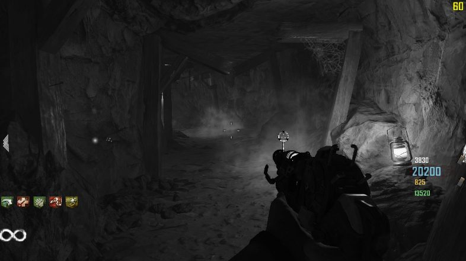
Round ∞ — Richtofen’s side sends you to the future
Requirements
4 players, game on Original mode.
Paralyzer + Time Bomb from the Mystery Box — . Tip: feed Leroy candy at the box to lock it in place for the whole game — .
Galvaknuckles or Bowie Knife for the sign step.
Vulture Aid (church, 3000) — you literally cannot see the wisp without it.
Open all doors and clear the debris early — you’ll be crossing the map constantly. A full bank helps.
Richtofen’s steps
Tap a step to check it off — progress saves on this device.
Build the Guillotine. The bench is between the Saloon and the gunsmith building (the Mule Kick house). Careful: some parts fit BOTH the guillotine and Maxis’s gallows — build at the right bench.
Satellite Dish — upstairs in the Saloon, on the side nearest the guillotine bench, by the fence.
Spool of Wire — the gunsmith room downstairs (the chalk room), in the corner near the catacombs entrance.
Crystal — in the catacombs: go up the railing from the Saloon, turn left, take the next left, jump over the hole — it’s in the debris directly ahead.
Antenna — the barn downstairs, heading toward the catacombs, behind a hanging lantern.
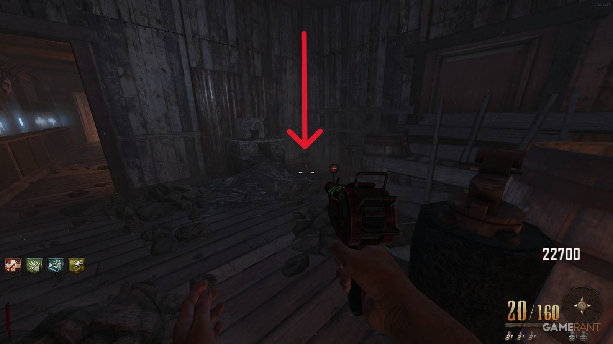
Satellite Dish — Saloon top floor, by the balcony
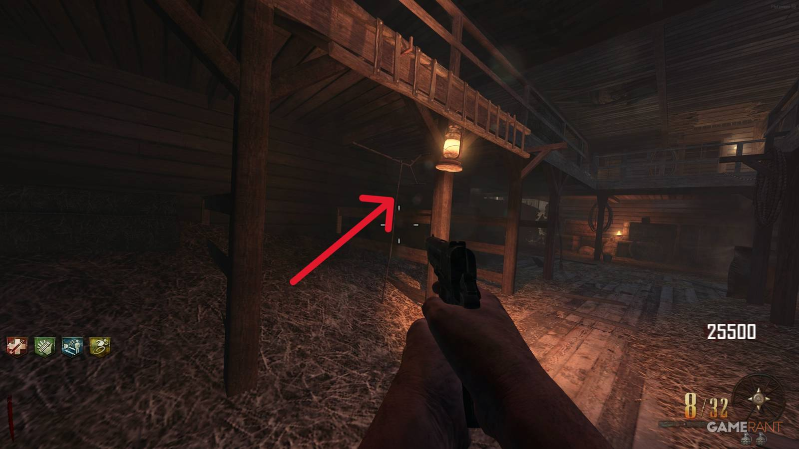
Spool of Wire — gunsmith chalk room, corner by the catacombs entrance
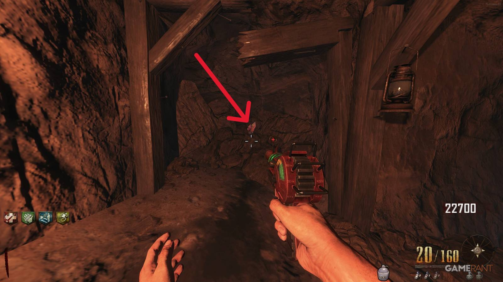
Crystal — in the mineshafts, back-right wall
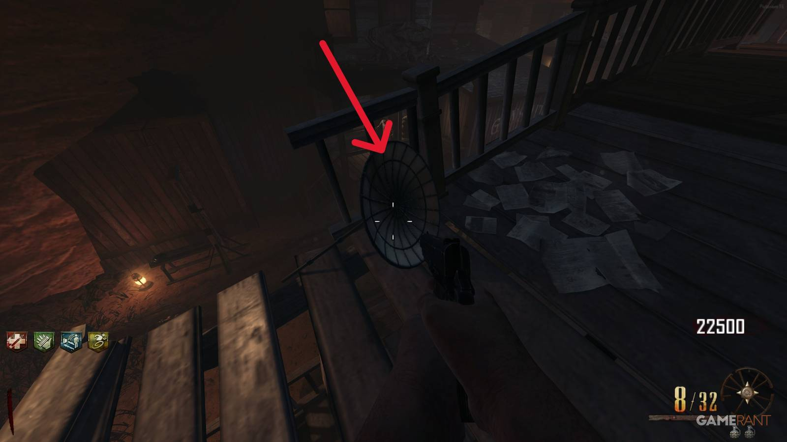
Antenna — barn lower floor, behind the hanging lantern
Charge the four red orbs with the Paralyzer. Shoot each dark red orb with the Paralyzer until it turns white (it keeps the red glow). They’re at:
The alleyway between the Saloon and the candy shop.
Left of the church entrance, behind a rock.
In the tunnel system above the town.
In the foliage by the mansion entrance, just off the maze.
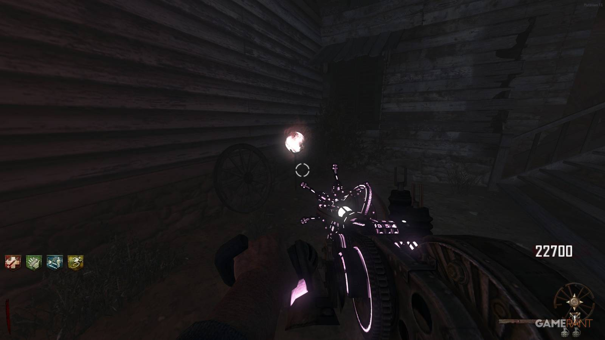
The Saloon orb — outside in the corner, right of the candy shop
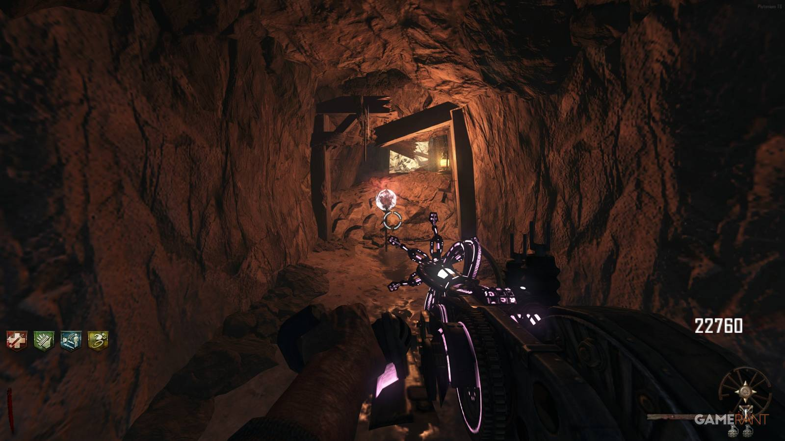
The church orb — left of the entrance, behind the rock
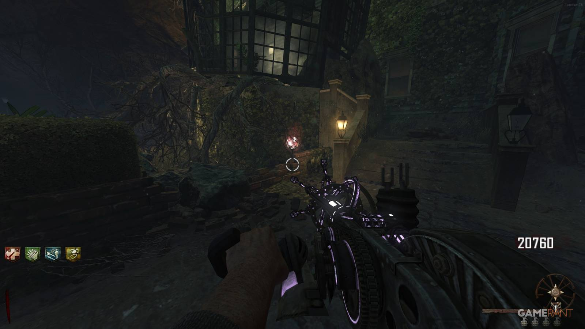
The mineshafts orb
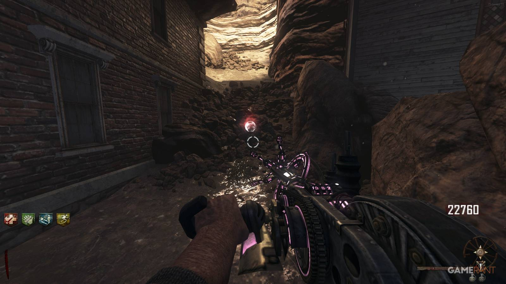
The maze orb — immediately left as you enter the hedge maze from the mansion
Knock down the lantern with a grenade. A purple lantern floats out of the courthouse window (toward the church or the jail). Cook a grenade 2–3 seconds, then throw it at the lantern — the blast drops it so you can pick it up. It fades if you leave it on the ground too long.
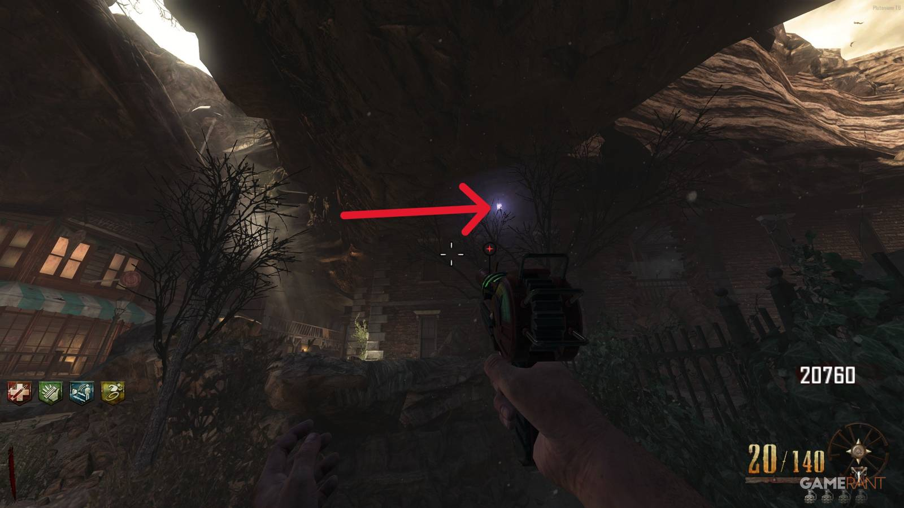
The purple lantern floating over the street
Charge the lantern on the witches.Only the player carrying the lantern can charge it: kill about 10 witches in the haunted mansion. Every kill plays a rising pitch — a new, different sound means it’s full. Then place the lantern on the glowing symbol on the gunsmith roof (outside the Mule Kick room).
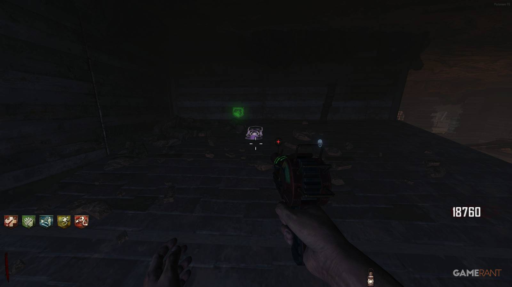
The chalk lantern outline on the gunsmith roof — place the charged lantern here
Decode the wall puzzle. A three-line code appears on the wall right by the roof symbol. It’s a tic-tac-toe (pigpen) cipher spelling three of the five tunnel sign names. Match your wall lines against the chart and write the three names down in order.
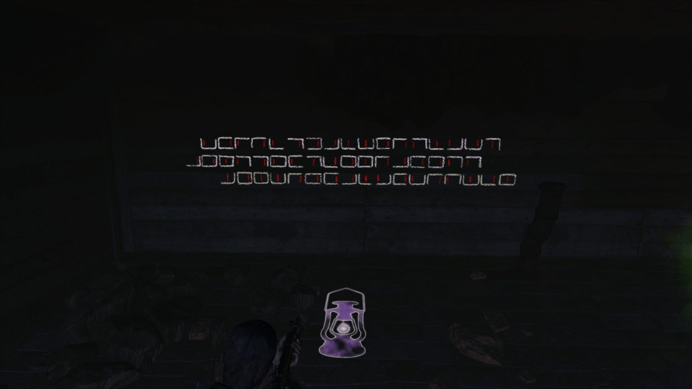
The wall code above your placed lantern
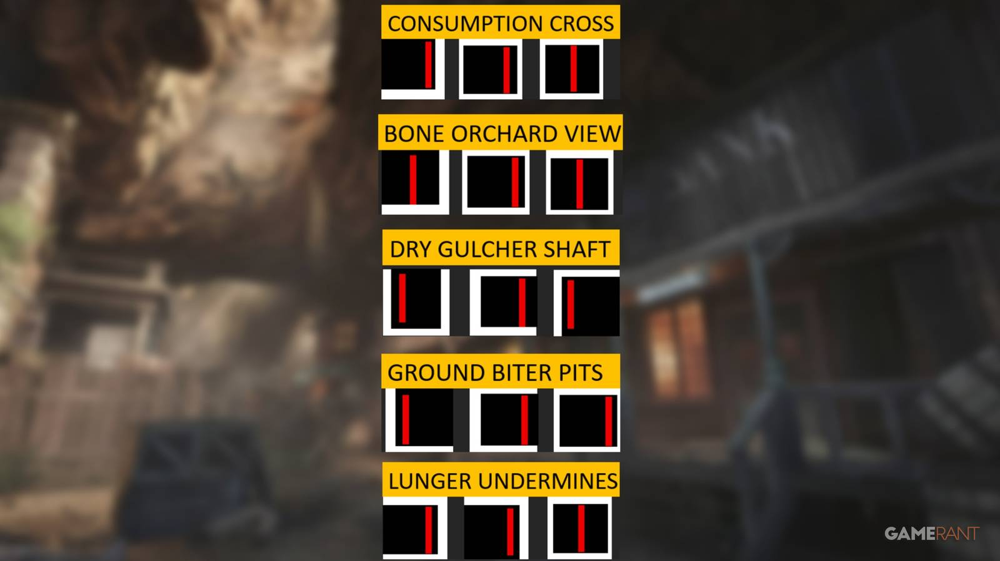
The decode chart — every sign name in cipher (credit: gamerant)
Melee the three signs, in order. The five named signs are posted around the tunnels. Hit YOUR three — in the order the wall gave them — with the Galvaknuckles or Bowie Knife.
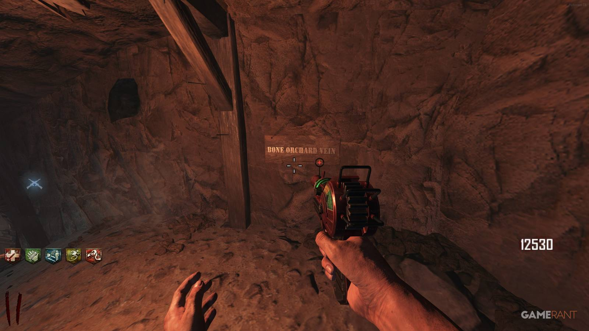
One of the named signs in the tunnels — punch your three in order
Each name written in the cipher, for matching against your wall:
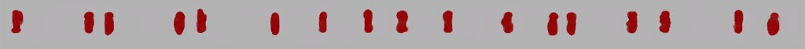
DRY GULCHER SHAFT
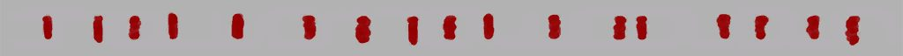
LUNGER UNDERMINES
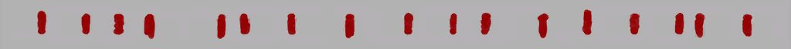
CONSUMPTION CROSS
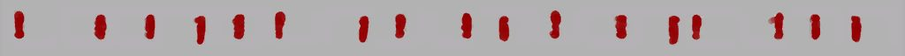
GROUND BITER PITS
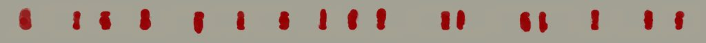
BONE ORCHARD VEIN
Walk the wisp home. Hitting the last sign correctly spawns a wisp next to it — visible only with Vulture Aid. Run into it and it jumps ahead; keep chasing it along its route: last sign → barn second level → jail second floor (past the wall-buy) → general store second floor → candy store → the guillotine. If nobody touches a wisp it fades and you redo the signs.
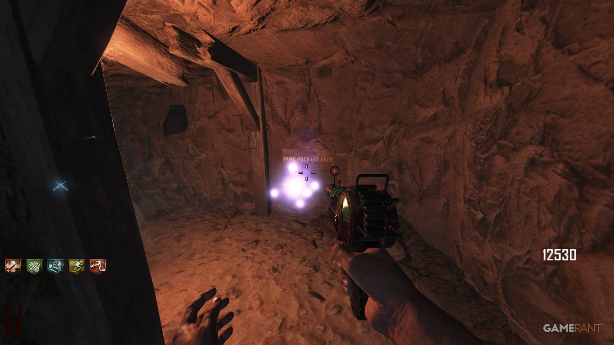
The wisp appears by the final sign
Kill 5 charged zombies at the guillotine. With the wisp sitting at the guillotine, nearby zombies absorb it and glow blue. Kill five of them — each death sends an orb into the guillotine’s crystal. Richtofen then asks for a Time Bomb.
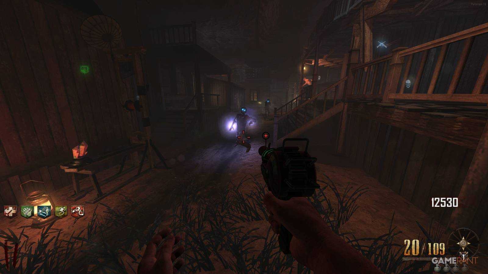
A charged zombie — blue glow, easy to spot
Round ∞ — find the switch in the future. Place a Time Bomb ON the guillotine bench, gather all four players crouched around it, and detonate. You’re thrown into Round Infinity: black-and-white, ~90 seconds, and the zombies are unkillable — don’t waste ammo, just dodge. Search the crew’s dead bodies for the switch — it’s on a random one. Bodies can lie: in front of the guillotine · by the Saloon stairs · left of the gunsmith entrance · the crevice behind the barn/gunsmith · the jail entrance · between the general store and the box · right of the candy store · between the big rock at the gallows and the candy store awning · behind the church rock · past the church entrance by the workbench · the alley between the bank and the barn.
Empty your hands first. Carrying a buildable part when you grab the switch can glitch it so it won’t place. And if time runs out without finding it: get another Time Bomb (Max Ammo re-arms it, or trade the box for Monkeys and back) and retry.
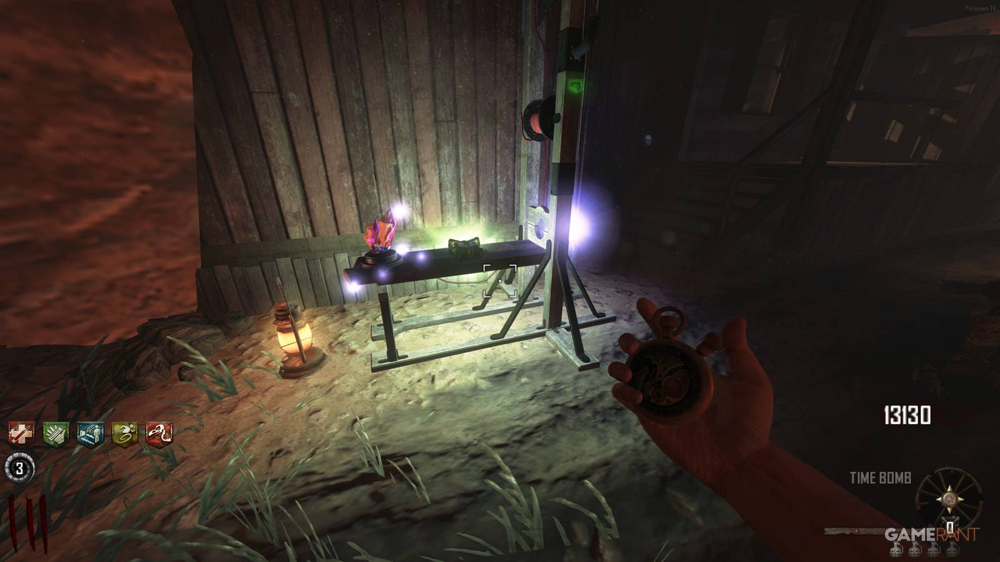
The Time Bomb goes ON the guillotine bench
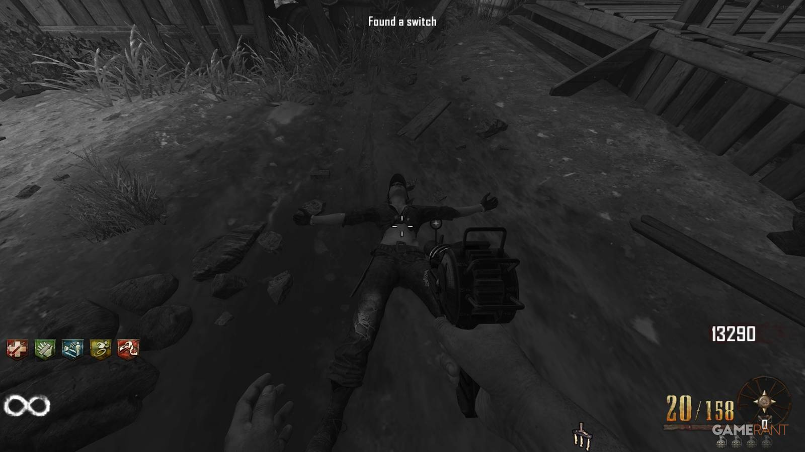
“Found a switch” — that’s the one, head back
Found it? Back in the present, place the switch on the guillotine.
Pull the maze levers in the right order. In the hedge maze (behind the mansion) four gates carry colored switches: Red, Blue, Green, Yellow. Find the correct order by trial and error: pull all four, and the ones pulled in a correct position spark after the fourth. To reset for another try, everyone returns to town and runs back through the mansion together.
Hints: the four jars behind the candy shop counter show a color order — a decent first guess, not guaranteed. If the yellow switch is missing (a known glitch), reset the maze the same way; it can also hide on a hedge in the maze center or near the fountain. Track which orders you’ve tried!
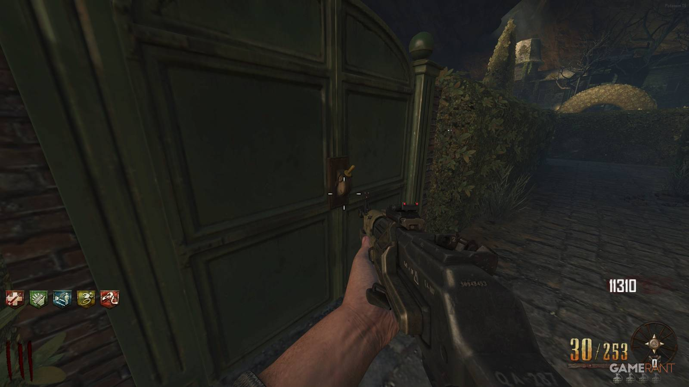
One of the four colored switches on the maze gates
Make a wish and shoot the targets. Have Leroy break the fountain in front of the church (send him at it with booze — ), then press the button on it to “make a wish”. Metal targets start spawning at four stations, one per player — each player must shoot every target at their station before it vanishes (~2 seconds; a lightning flash marks where the next appears — shoot the flash if you can’t see the target). Ranked easiest to hardest:
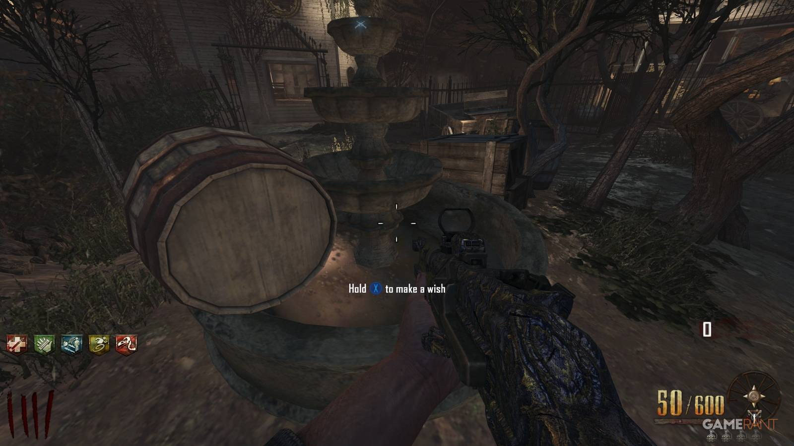
The wish prompt on the broken fountain — this starts the sharpshooter finale
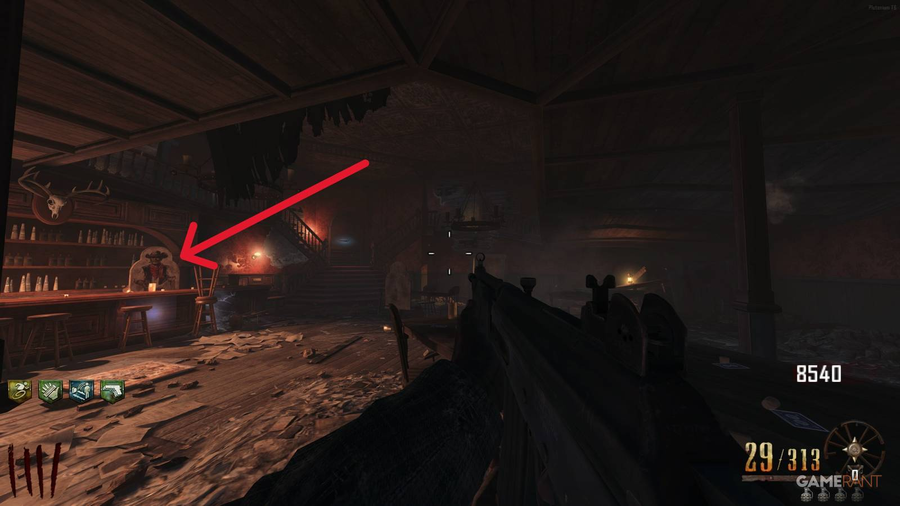
1 — inside the Saloon (easiest)
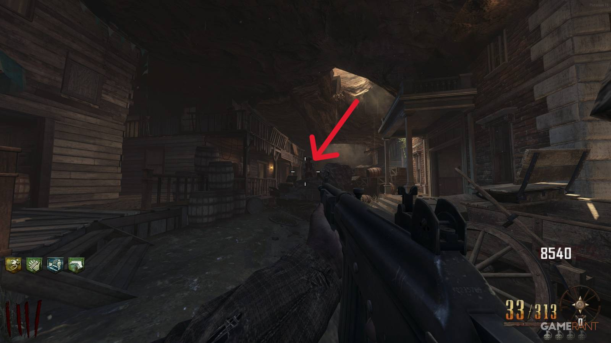
2 — around the jailhouse, between Jugger-Nog and the Mystery Box
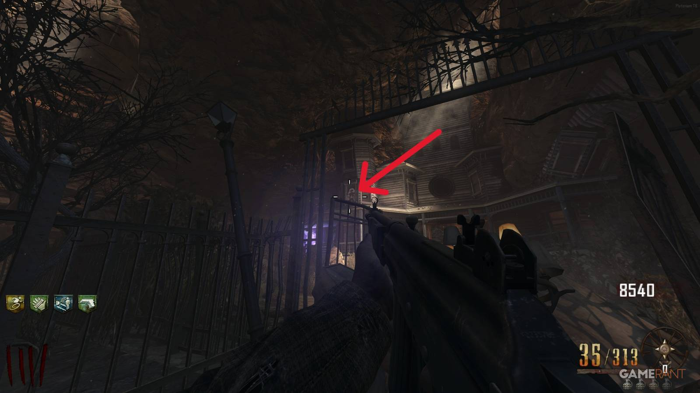
3 — left side of the mansion, in the windows
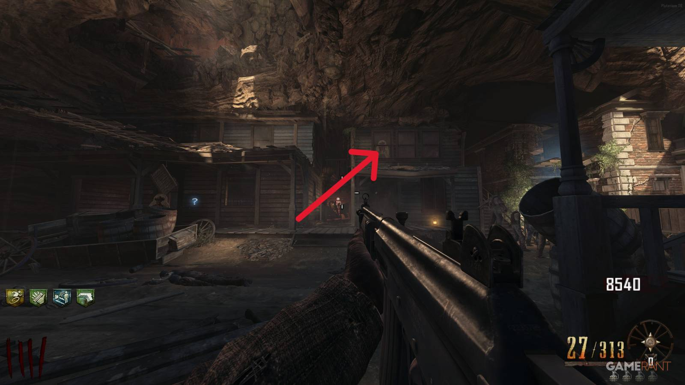
4 — by the candy store, opposite the church (hardest)
All four stations cleared = “Mined Games” done — everyone gets all perks for the rest of the game, and the Buried icon on the lobby screen glows blue. One more step remains to finish the story: .
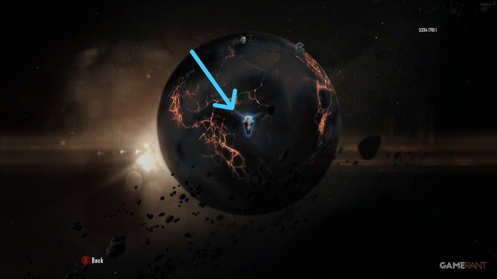
Confirmation — the Buried icon glows blue in the lobby
Requirements
4 players, game on Original mode.
Time Bomb from the Mystery Box — . No Paralyzer needed on this side.
Turbine + Subsurface Resonator built — .
Galvaknuckles or Bowie Knife for the sign step (and the knuckles make the mansion witch a one-hit kill — big for the bells step).
Leroy freed, with candy and booze handy — .
Maxis’s steps
Tap a step to check it off — progress saves on this device.
Build the Gallows. The bench is next to the courthouse entrance. Careful: some parts fit BOTH the gallows and Richtofen’s guillotine — build at the right bench.
Battery — behind the altar in the church.
Spool of Wire — the room below Mule Kick (the gunsmith chalk room), corner near the catacombs entrance.
Antenna — the barn downstairs toward the catacombs, in one of the stables on the right.
Bulbs — the room above Leroy’s cell, on the boxes near the Mystery Box spawn.
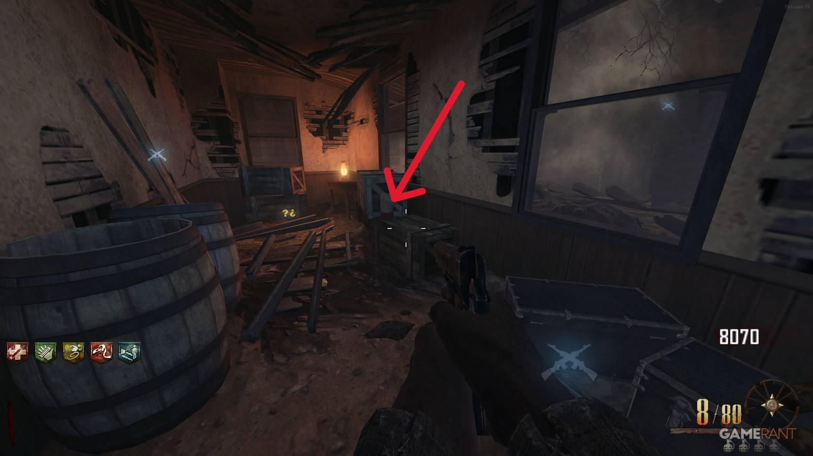
Battery — behind the altar in the church
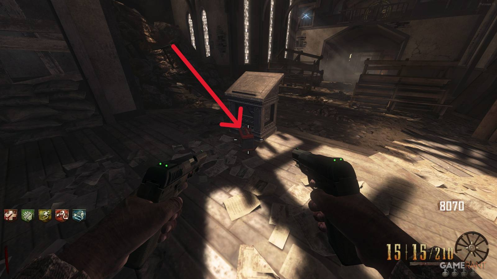
Bulbs — top floor of the jailhouse, by the box spawnSpool of Wire — the chalk room below Mule Kick, corner by the catacombsAntenna — barn lower floor, behind the hanging lantern
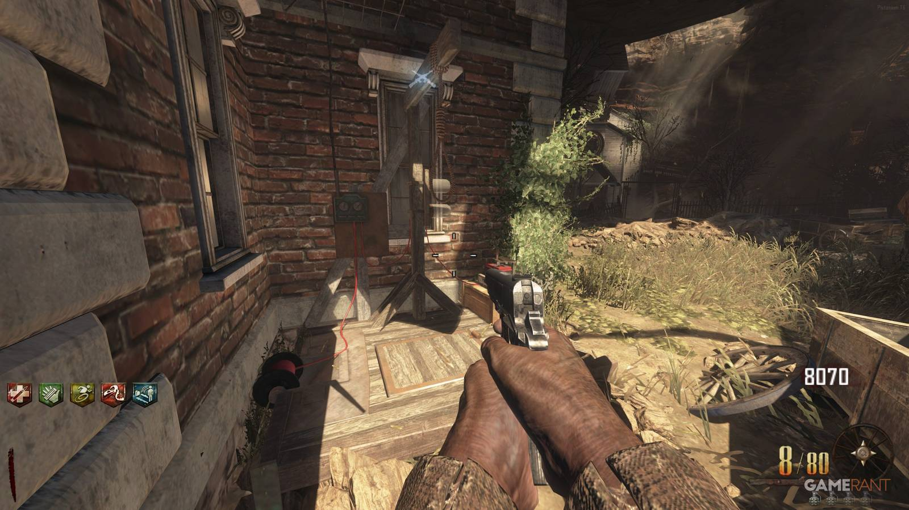
The gallows, right beside the courthouse entrance
Break the four red orbs with the Subsurface Resonator. Place the Resonator (powered by a Turbine) at each orb and destroy it. Same four spots as Richtofen’s side:
The alleyway between the Saloon and the candy shop.
Left of the church entrance, behind a rock.
In the tunnel system above the town.
In the foliage by the mansion entrance, just off the maze.
Give Leroy candy next to the Resonator and he’ll fetch the Turbine to it himself — .
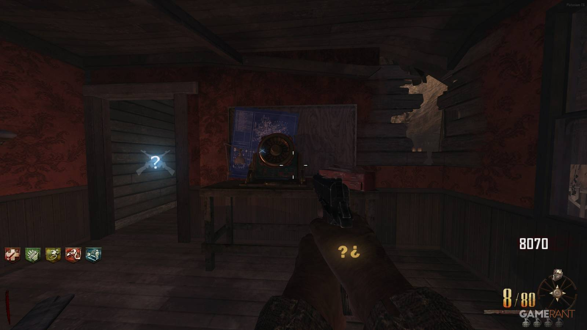
The Resonator built — carry it to each orb with its Turbine
The Saloon orb — outside in the corner, right of the candy shopThe church orb — left of the entrance, behind the rockThe mineshafts orbThe maze orb — just inside the hedge maze from the mansion
Knock down the lantern with a grenade. Same as the other side: the purple lantern floats from the courthouse; cook a grenade 2–3 seconds and drop it with the blast, then pick it up before it fades.
The purple lantern floating over the street
Sugar Rush — charge the lantern the Maxis way. No witches this time: the lantern charges on zombies killed by Leroy (after candy), the Trample Steam, the Subsurface Resonator, the Head Chopper, or a Nuke — and the lantern carrier must stand close to the kills. When it’s full, place it on the chalk symbol on the gunsmith roof.
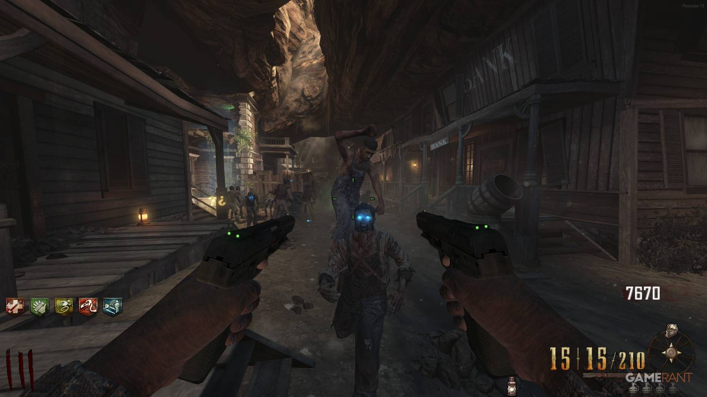
Stay close while the traps (or Leroy) do the killingThe chalk lantern outline on the gunsmith roof
Decode the wall puzzle. The three-line tic-tac-toe cipher appears by the roof symbol — it spells three of the five tunnel sign names. Write them down in order.
The wall code above the lanternThe decode chart — all five sign names in cipher (credit: MrDalekJD)
Melee the three signs, in order with the Galvaknuckles or Bowie Knife.
One of the named signs in the tunnels
Escort the wisp to the gallows — twice. Prep first: place a Time Bomb, open the 1250-point couch between the tunnels and the gunsmith upper level, and have Leroy break the barrier between the general store and the candy shop. Then the sign-hitter follows the wisp its whole route — tunnels → courtroom → past Speed Cola toward the jail → loop up the jail's top floor toward the barn → down through the tunnels → out the gunsmith upper level → Saloon → candy shop → courthouse → the gallows, powering one container. The catch: the wisp only survives while zombies are near it — stage zombie “checkpoints” at the jail, the gunsmith and the Saloon (or start a fresh round as it moves so spawns follow you).
One run powers one container — now detonate the Time Bomb to travel back and do the whole escort again for the second one.
Keep zombies near the wisp or it fades
Ring the bells. Nine bells in three buildings, three each:
Courthouse, ground floor — left of the judge’s podium · on the table right of the podium · in the corner immediately left as you enter.
Candy shop, second floor (not the power switch room) — corner of the square table by the wall · the table with two pots near the couch blockade · the chair right of the stairway door.
Barn, top level — hay bale before the jail drop-down · hay bale right of the wall hole near the gunsmith · hay bale right of the railing gap.
Behind the secret bookcase in the mansion sits a switchboard with a 3×3 light grid — columns left to right = candy shop / barn / courthouse. One player works the board and calls out which light glows; the other three stand ready at the bells. Ring the called bell in time and the light turns green and the next lights up; too slow and the board resets. Work through all nine.
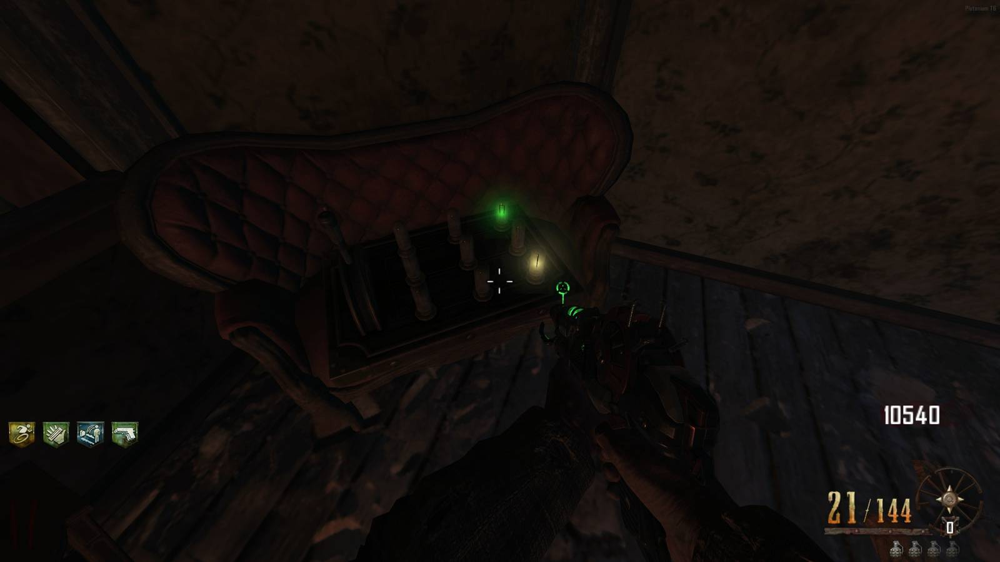
The switchboard, on the sofa behind the mansion’s secret bookcase
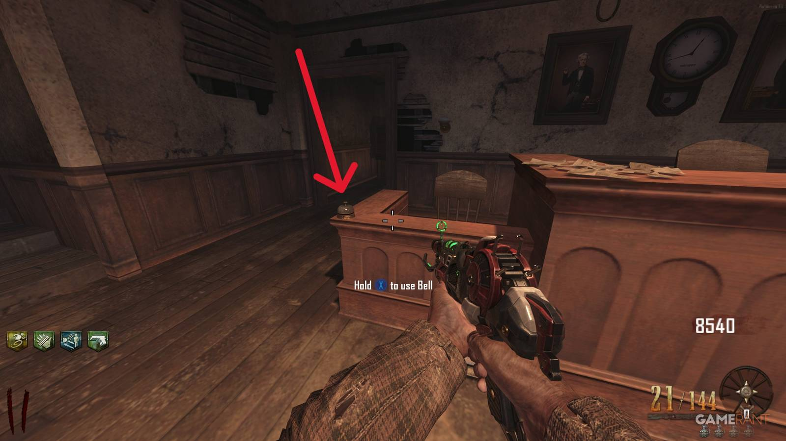
A courthouse bell, by the judge’s podium
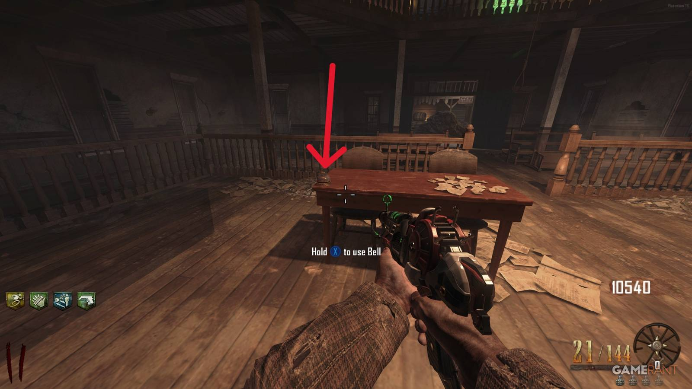
A candy shop bell, on the table upstairs
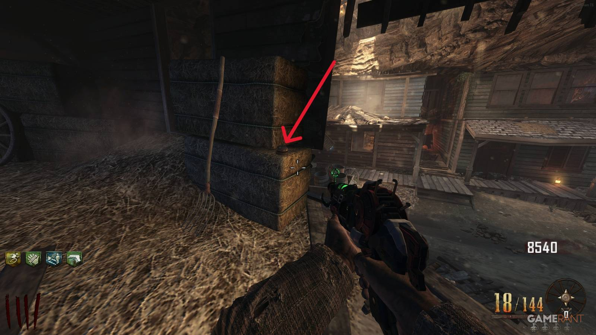
A barn bell, on the hay bales up top
The board operator is stuck in the mansion with the witch spawning nonstop — Galvaknuckles drop her in one hit.
Make a wish and shoot the targets. Same finale as Richtofen’s side: Leroy breaks the fountain by the church, wish on it, and each player clears every target at their station — Saloon · Jugger-Nog/box · mansion windows · candy store opposite the church.
The wish prompt on the broken fountain
1 — inside the Saloon (easiest)2 — around the jailhouse, between Jugger-Nog and the Mystery Box3 — left side of the mansion, in the windows4 — by the candy store, opposite the church (hardest)
Done = “Mined Games” complete, all perks for the rest of the game — and the lobby’s Buried icon glows orange. The story finale lives in .
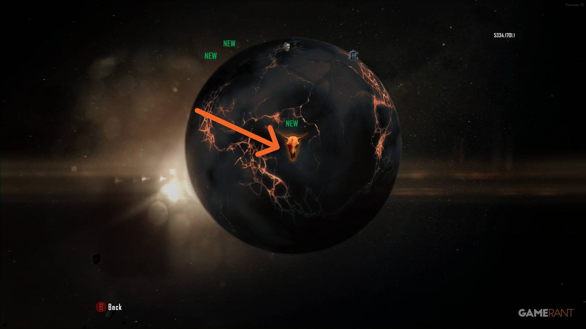
Confirmation — the Buried icon glows orange in the lobby
Leroy — the friendly Giant
Buried’s signature mechanic: a huge friendly prisoner who smashes debris, fights zombies, and even builds for you — if you keep him in booze and candy.
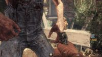
Candy at the box: Leroy smashes it into the ground — locked in place all game
Freeing him
Leroy is in a jail cell near the first Mystery Box spawn (head up the stairs to the Sheriff’s House, jump across to the Jailhouse, and drop through the floor). Grab the key from the wall by the cell and open it. He ignores you until you hand him booze (there’s a bottle right by his cell) — then he smashes the debris off his cell and starts pacing between his cell and the Saloon.
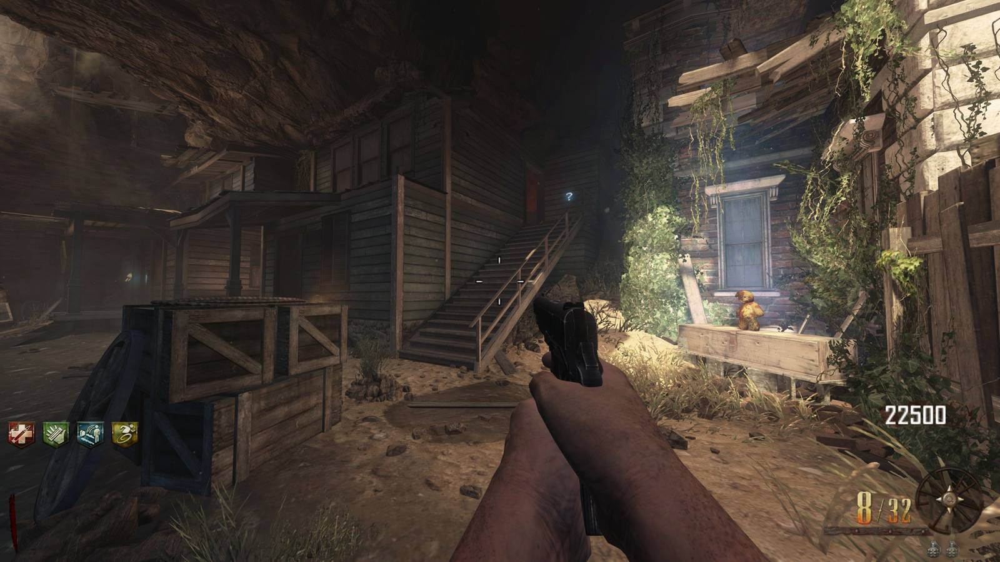
Up these stairs, across to the Jailhouse, then drop through the floor
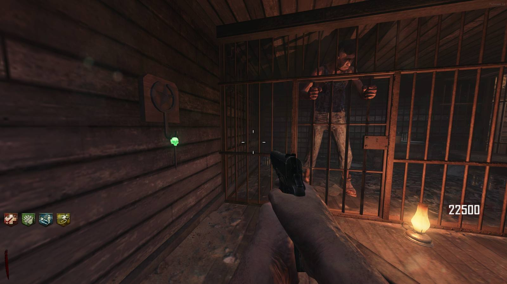
Leroy in his cell — the key hangs on the wall outside
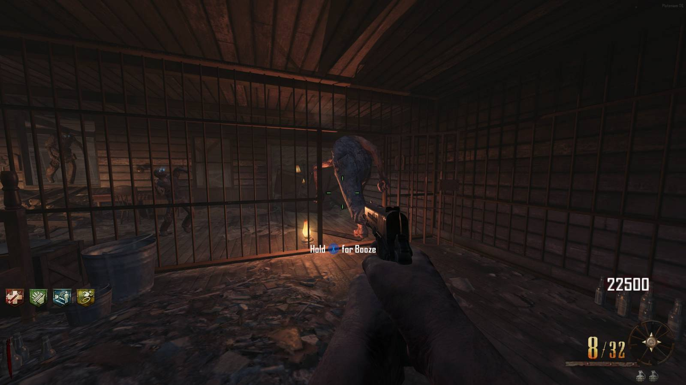
Hand him the booze and he smashes his own way out
Don’t shoot him. Wounding him sends him back to his cell, locked in — you’ll need the key again. It respawns on one of four hangers: left of his cell · the judge’s bench in the courthouse · the middle room upstairs in the Saloon · behind the deposit box in the bank. (Melee is fine — a whack just makes him sprint for a bit, handy for steering him.)
The key, booze and candy share the chalk slot — you can’t hold them and a wall-gun chalk at the same time.
Booze
Give him booze and he charges off in the opposite direction, smashing any debris in his path — this is how you open the blocked passages (including the church). The further he runs, the more bonus points you get. He flattens zombies and players on the way. Booze spawns in his cell and in the Saloon once per round; after you’ve used one, buy another for 1000 at the Saloon counter.
Candy
Candy is in the candy store (again: one free per round, then 1000 at the counter). What he does depends on where you feed him:
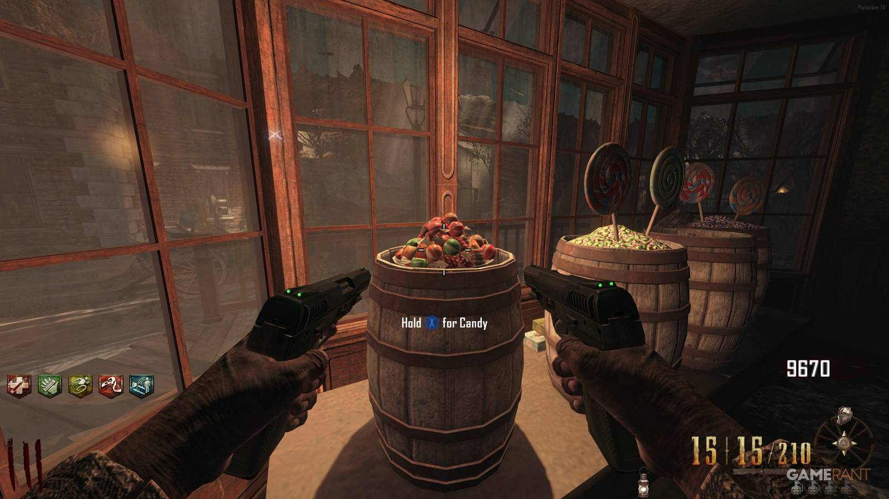
The candy store counter — 1000 a pop once the free one’s used
Candy given…
What Leroy does
On its own
Follows you around attacking zombies until it wears off.
Next to a workbench
Gathers the parts and builds a buildable for you (random one if the bench is empty). Don’t shoot him mid-errand.
At the Mystery Box
Punches it into the ground — locked in place all game, and it can never roll a teddy.
At a rolled box you haven’t taken
Forces a re-spin.
At an empty box spawn
Fetches the box and puts it there (unless it’s been locked).
Near a Subsurface Resonator with no Turbine
Fetches the Turbine to power it.
Near a Power-Up
Rerolls it into a different one.
Near the gunsmith chalk
Takes three chalks and draws them at random wall spots.
Near the bank deposit box
Fetches you a power-up for 2000 points.
Next to a crawler
Picks it up and carries it around for you.
Tap a card to open it.
The Endgame — Easter Egg TrackerThe Victis story finale — TranZit + Die Rise + Buried
At the back of the courthouse ground floor is a box with a 3×4 light grid — the Easter Egg Tracker. Each row is a player; the columns are Tower of Babble (TranZit) · High Maintenance (Die Rise) · Mined Games (Buried). Blue = done for Richtofen, orange = done for Maxis.
Requirements
All four players have finished all three easter eggs on the same side.
All Nav Card tables built with the correct Nav Cards inserted.
With twelve lights in one color: shoot the tracker and press the button it reveals.
Richtofen’s ending: Maxis is erased; Richtofen rides along in Stuhlinger’s head. Reward: permanent Fire Sale + a Mule Kick variant that carries four weapons.
Maxis’s ending: Maxis takes the Aether and stuffs Richtofen into a random zombie — all eyes turn orange. The one blue-eyed “Richtofen zombie” drops a power-up every time it’s killed.
Warning: pressing it erases everyone’s easter egg progress. With all three done and the cards placed, you can also press “use” near the tracker to play the hidden song Samantha’s Lullaby.
Song — “Always Running”Three teddy bears
Activate all three teddy bears to play “Always Running” by Malukah:
At the mine entrance, sitting by the hay near Quick Revive.
In the candy store, inside one of the candy barrels.
In the mansion, in the right-hand room with Double Tap, near a corner.
The ghost pianistDartboard bullseye → free perk
Hit a bullseye on the Saloon dartboard with a Ballistic Knife and the piano behind you starts playing itself. Leave the maze through the back of the mansion and you’ll find a ghost at the piano — tip him 10 points and he hands you a free perk. (You can also just play the Saloon piano yourself by tapping Use.)
The Haunted MansionShe takes 2000 a swipe
Inside the mansion a ghostly woman spawns relentlessly and steals 2000 points per hit — fast, but fragile (Galvaknuckles one-shot her). Fight all the way through the mansion and kill every ghost on the run and a random perk bottle drops at the end.
The LSAT catwalkOne jump, one chance
An LSAT sits on a catwalk above the starting area — a precisely timed jump gets you up for the 2000-point buy, and the catwalk collapses right after, so it’s once per game for one player. Pack-a-Punch it into the FSIRT and hold it for the “FSIRT Against the Wall” achievement.
Chalk wall-buysDraw your own guns — get paid for it
Chalk outlines in the gunsmith shop can be carried to blank wall spots around the map and drawn there, creating a wall-buy of that gun for everyone — and paying YOU 1000 points per chalk (2000 for the final one, doubled during Double Points). Feed Leroy candy near the chalk and he’ll draw three of them at random spots himself.
Bank & Weapon LockerShared across all three Victis maps
The bank (deposit/withdraw points) and the weapon locker (store a gun) work across TranZit, Die Rise and Buried — whatever you stashed there is waiting here. If a stored gun doesn’t exist on this map, you get its closest equivalent.
Time Bomb trick: place a bomb, withdraw your savings, spend everything opening the map — then detonate. Doors stay open, and the money is back in the bank.
Persistent upgrades (perma-perks)Hidden upgrades that follow your account
Earned through specific actions, kept between games (Green Run / Die Rise / Buried only, not in Grief). A green flash means you earned one; a faint eerie sound means you lost one. The Buried headliner: PhD Flopper isn’t on the map, but the perma-perk version is.
Upgrade
How to earn it
How you lose it
PhD Flopper (Buried only)
Take screen-reddening fall damage 5–10 times.
Take heavy fall damage without dolphin-diving.
Faster Revive
Revive teammates 17 times in one game.
Fail a revive attempt — even accidentally.
More Headshot Damage
A number of collateral headshots (two kills, one bullet).
25–75 kills in a row without a headshot.
Stronger Barriers
Repair 75 barriers in one game (active from round 10).
A full round without building a single board.
Stronger Carpenter Barriers
Kill a zombie climbing out of a window during a Carpenter.
Miss doing that during a later Carpenter.
200% Health
On Buried: finish round 1 in processing, then get downed there.
Lost automatically at round 15.
Red Insta-Kill
Kill nothing during an Insta-Kill, twice in a row.
Take a zombie hit during an Insta-Kill.
Refund on Perks
Go prone right after buying a perk, ~65 times — then it pays 1000 back each time.
Buy a perk without going prone after.
Better Mystery Box
Keep whatever the box gives you, several spins running (before round 10).
Lost automatically at round 10.
Half-off
Spend 3000+ during one Double Points.
Spend under 1000 during the next Double Points.
Double Points
Only headshot/melee kills during a Double Points.
Any melee or headshot kill afterwards can drop it.
Tombstone
Buy four perks before round 4 — keep your perks through a down.
Go down three times in a row with no perks.
Extra Sniping Points
5–15 long-range sniper kills (+300/kill after).
Miss three sniper shots in a row.
Double Pistol Points
Empty a pistol hitting nothing, then melee 1–3 zombies.
Melee or pistol kills afterwards can drop it.
Ray Gun off the Wall
Buy the Olympia / its ammo a few times (rank 3 or lower) — Ray Gun replaces it at 500.
Lost automatically around rounds 12–14.
All three come from the Mystery Box — lock the box in place with Leroy and candy before you start fishing.
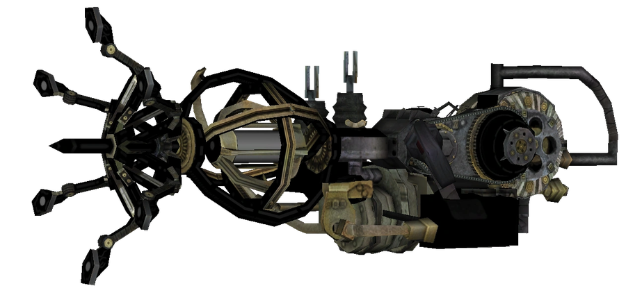
ParalyzerMystery Box — infinite ammo, and it flies
Fires a beam that slows, freezes and then kills everything in a cone. Infinite ammo — the catch is an overheat gauge on the gun: hit 115 and it locks up until it cools back to 100 (about six seconds of continuous fire per burst).
It flies. Point it at the ground, fire, and press jump — you ride the beam upward as long as you hold the trigger. That’s how you reach rooftops and skip debris (including into the blocked church). Watch the landing: fall damage still applies — a quick blast at the ground just before touchdown breaks the fall.
You can lift a teammate: they jump into your beam. It cuts out if they cross your crosshair.
With Vulture Aid, ammo drops cool it faster.
Pack-a-Punched it becomes the Petrifier — roughly ten seconds of fire before overheating.
Required for Richtofen’s easter egg (the orbs) .
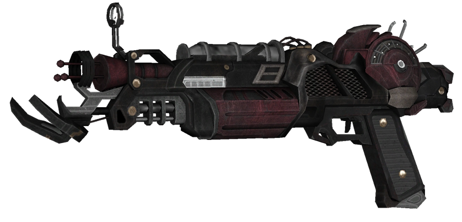
Ray Gun Mark IIMystery Box — the Ray Gun, evolved
Debuted on Buried (and available on every BO2 map). Fires three-round bursts with no splash damage — so no more blowing yourself up in a corner — and it punches straight through whole trains of zombies.
Pack-a-Punched: Porter’s Mark II Ray Gun — double magazine, more ammo, red rays.
You can’t hold it and the original Ray Gun at the same time — the box will never offer you the second one.
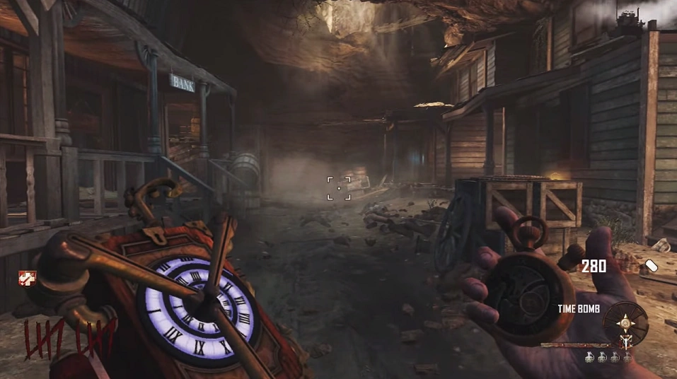
Time BombMystery Box — a save point in your pocket
Throw it down like C4 and a golden watch appears in your inventory. Detonate the watch and everyone rewinds to the moment and place the bomb was planted — same round, same weapons, perks and points. An icon above the round counter shows which round you’ll return to.
One use per bomb. A Max Ammo lets you place a fresh one.
It rewinds bank/locker deposits — but NOT opened doors, Leroy’s demolition, buildables, or easter egg progress. (That’s the free-money trick .)
Both easter egg sides need it — Richtofen’s Round ∞ and Maxis’s double wisp run .
Four buildables — and every single part spawns inside the General Store, so one building stocks them all. Build each at any workbench. The lazy way: feed Leroy candy next to a bench and he gathers the parts and builds it himself — .
TurbinePortable power — the Resonator needs it
The same wind-turbine from TranZit: place it to power things locally. On Buried its main job is powering the Subsurface Resonator (Maxis’s easter egg side). Leroy will even carry it to a placed Resonator if you candy him next to one. Three parts, all in the General Store:
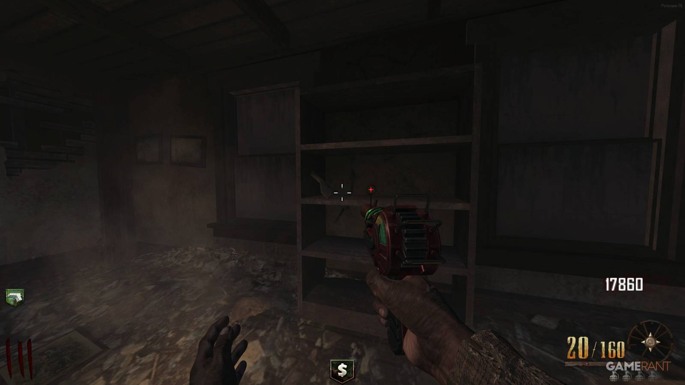
Tail — ground floor, on the shelves to the far left
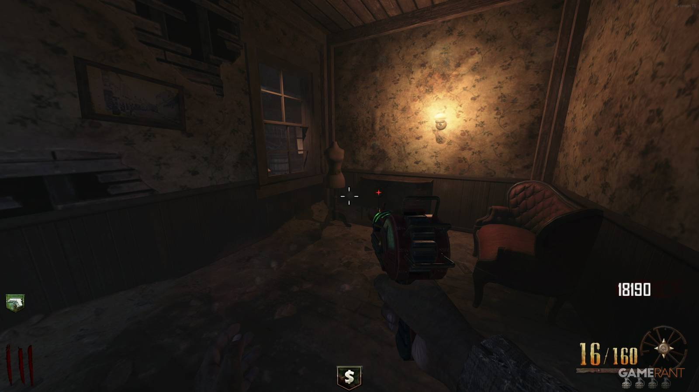
Fan — second floor, in the cabinet in the right roomMannequin — back-right corner of the back room, ground floor
A good bench for it: the Saloon — a short sprint from the Jugger-Nog camp spot.
A dish that blasts zombies with a shockwave when powered by a Turbine. Required on Maxis’s side to destroy the four red orbs, and its kills charge the lantern . Four parts, all in the General Store:
Wheel — on the front counter as you walk inSpeaker — behind the front counter, under the small paintingMount — leaning on the wall by the back doorMotor — top of the stairs, in the right corner
Built and ready — remember it only fires with a Turbine beside it
Head ChopperSet-and-forget decapitator
A spinning blade trap: plant it and it lops the heads off anything walking past. Its kills count for charging Maxis’s lantern. Four parts, all in the General Store — the Saw (in a barrel behind the counter), the Hinge (on the front counter), the Stand (back room, behind the counter) and the Crank (on the center shelf). The marked spots:
In the barrels behind the front counterOn the front counterIn the back room, behind the counterOn the shelf in the middle of the store
Trample SteamThe Die Rise launcher, back again
A spring pad that flings zombies (or you) across the map. Its kills also charge Maxis’s lantern. Four parts, all in the General Store — the Flag (in a barrel under the stairs), the Motor (on the center-left shelves), the Chicken Wire (against the upstairs banister) and the Bellows (upstairs, first room on the right by the desk). The marked spots:
In the barrel under the stairsOn the shelves in the main roomUpstairs, against the banisterUpstairs, first room on the right
Pack-a-Punch
5000 points per upgrade. The machine lives past the haunted mansion, through the hedge maze behind it — the same maze as the easter egg levers, with the fountain courtyard at its heart.
Get into the mansion — it’s the big house beyond the church side of town. The ghost woman spawns nonstop inside and steals 2000 points per swipe; run through or one-shot her with Galvaknuckles.
Out the back and into the maze. The hedge walls shift between games; keep pushing inward.
The machine is at the maze’s center, by the fountain courtyard.
Shortcut: with the Paralyzer you can point it down, fire, and simply fly over debris and fences on the way — the fastest PaP commute on the map. Clearing every ghost on a full mansion run also pays out a random perk bottle.
Perk machines
Seven perks — including Vulture Aid, which debuts here and never appears again. Power switch is upstairs in the candy shop.
The church is sealed when the game starts — Vulture Aid sits inside. Either send Leroy through the debris with booze, or fly over it with the Paralyzer.
Perk
Cost
What it does
Where
Quick Revive
1500 (500 solo)
Faster revives; solo it self-revives you, three buys max.
Processing, by the mine entrance where you first drop in.
Jugger-Nog
2500
Take far more hits — always the first buy.
In town near the general store, by the Mystery Box’s starting spot.
Speed Cola
3000
Reload much faster.
On the path between the courthouse and the jail.
Double Tap 2.0
2000
Faster fire rate, double damage per bullet.
In the mansion — the right-hand room.
Stamin-Up
2000
Run faster, sprint longer.
Location not in the reference — send a photo and I’ll pin it.
Mule Kick
4000
Carry a third weapon.
Upstairs in the gunsmith building, above the chalk room.
Vulture Aid
3000
See perks, wall-buys, the box and PaP through walls; zombies drop mini ammo/point packets; some zombies leak a green stink cloud that makes the horde ignore you while you stand in it.
In the church, left of the altar.
No PhD Flopper machine — but the perma-perk version exists on this map . Vulture Aid’s ammo drops also cool the Paralyzer faster.
Some locations above are approximate (the references only mention them in passing) — send machine photos whenever you like and I’ll build the usual gallery and pin the spots.